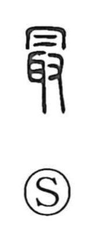

最

Kun: mottomo, toru | On: sai
most ・ foremost ・ best ・ to take ・ to collect
Explanation
最 places 取 beneath 冃, a covering shape. 取 combines an ear with a hand: after killing an enemy, a soldier cut off the left ear as proof, and the number collected determined military merit. 冃 covers the gathered trophies.
The highest tally established the foremost achievement. From taking and assembling the ears, 最 thus acquires the sense of first rank or greatest degree, becoming the ordinary ‘most’ in comparisons.
The older sense of collecting survives in the related 撮, which adds a hand and describes picking or pinching things up. The character's history links gathering a countable collection with being foremost within a ranked set.